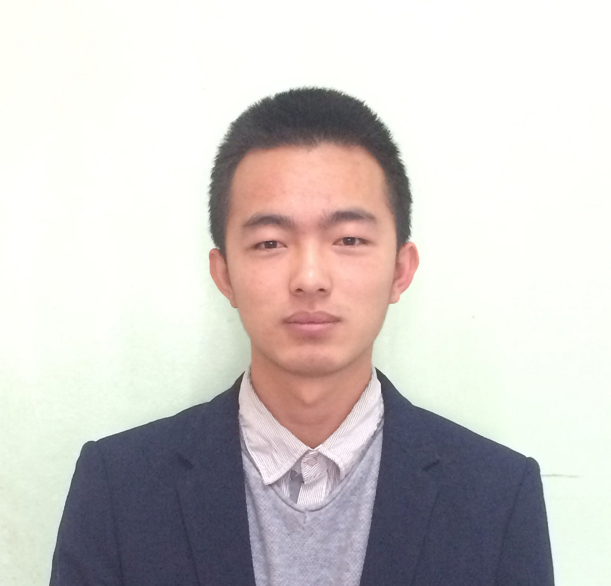

@ 黄俊
@@ 电 话:: 18293107086
@@ 邮 箱:: brioal@foxmail.com
@@ Q Q :: 821329382
@@ 微 信:: q821329382
@@ 博 客:: [http://blog.csdn.net/qq_26971803](http://blog.csdn.net/qq_26971803)
@@ GitHub:: [https://github.com/Brioal](https://github.com/Brioal)
# 个人信息
## 姓 名: 黄俊
## 性 别:男
## 出生年月:1995.01
## 入学年份:2013
## 学 校:兰州大学
## 专 业:计算机科学与技术
## 个人简介
## 自大二下学期开始自学Java和Android,快有一年的时间了,主要倾向于Android开发,这一年内多次作为技术人员参与创新创业项目,有较为完整的App开发经验.此外还喜欢研究算法,有一定Ps和Ai基础,大部分编程开发都在Linux环境下完成,能熟练使用Linux系统,有写总结博客的习惯,喜欢团队合作,有三年的学生工作经历,在院内担任团委的常委,希望能够在实习中增长见识拓展技能.
# 项目经历:
## 目前完全做技术的项目只有一个,对接一个电商平台,目前正在开发中,除此之外均为创新创业项目中的App,因为大多数没有落地实施,数据也是测试用的,所以没有上架应用商店
## 应用商店发布过小型的App
@@ [重启管理](http://android.myapp.com/myapp/detail.htm?apkName=com.brioal.poswermanager)
@@ [网页收藏夹](http://android.myapp.com/myapp/detail.htm?apkName=com.brioal.urlconnections)
# 获奖情况:
- 2013 校级优秀共青团员
- 2014 院级优秀共青团学生干部 ,校级优秀共青团员
- 2015 "川沙新镇"首届全国智慧人才创业大赛西北西南区决赛优秀奖
- 2015 院Ps创意大赛二等奖 , 程序设计大赛一等奖
- 2015 "互联网+"大学生创新创业大赛校赛二等奖
- 2016 全国大学生计算机设计大赛 外包大赛二等奖
# 正在进行的项目:
- 2016电商大赛:校赛答辩第一名
- 2016创青春创业大赛:等待省赛
- 2016校创:院答辩分数第一
- 2016 全国大学生计算机设计大赛 被推荐参加国赛
